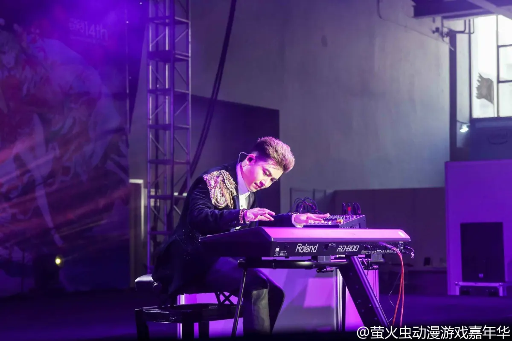

10/ V.K克的音樂在國際間引起注目，在日本也有發行專輯，國際粉絲不斷累積。未來是否會想要逐漸往國際發展？
台灣的音樂、影視本來就應該要往外走，因為台灣的市場太小了。我認為走向國際是大家都希望可以達成的一件事情，因為我們都希望自己的音樂可以讓更多人聽到。我的演奏專輯是沒有語言限制的，所以對於外國人來說相對比較容易接受，我覺得這是一個優勢。
談到國際發展，最近我們在籌劃「第六屆琴之翼V.K克國際音樂大賽」，這是一個沒有國際限制的比賽，也每年都在進步，今年的參賽者還增加了韓國、澳洲的參賽者，我希望可以有越來越多不同文化背景的人來參加。
其實，要走向國際，“管道”與“通路”並不是最重要的，因為現在的數位平台都是全世界發行的，最重要的在於“內容”與“宣傳”。即使有了內容，也必須達到一個門檻，才能讓大家知道你，至於這個門檻標準是什麼，也許大家都還在摸索中。舉例來說，現在有許多人都會想一些招數，想辦法讓自己的影片被分享，這也是一種方法。跟其他國外藝人跨界合作也是一個很好的方式，我最近一次的巡迴演出就有跟一位我很喜歡的歌手合作，他是演唱【Final Fantasy XIII】 主題曲 《Eternal Love》的日本歌手 THE SxPLAY(ザ・スプレイ)，我邀請他來當我的特別嘉賓演唱《手掌心》。像類似這樣的跨國合作就滿有趣的，可以讓來自不同國家粉絲認識自己喜歡的藝人。

（圖片來源：V.K克粉絲專頁。）
11/ 曾做過各個大小場演出的V.K克，一直到現在，表演前一分鐘還是會緊張？
我到現在不論是大小場都還是會緊張，只是緊張的程度會因為經驗而不一樣。會因為場次越來越大而漸漸習慣，但我覺得適度的緊張是比較正常的（笑）。
12/ V.K克的現場表演，從舞台設計到音樂都令人驚艷！對他而言，創作與演奏，最喜歡和最有挑戰的地方是什麼？
創作對我來說具有挑戰部份是要做出讓自己滿意，又要讓案主喜歡或符合廠商需求的作品，要設法在這之間取得一個平衡還要突破自己。
相較於創作，演奏不像是創作可以宅在家中自己做，它是需要跟人合作、跟觀眾互動的，對我來說，演奏像是在平衡創作。
演奏對我來說具有挑戰的部分是在各種艱難的突發狀況之下，如何去保持和平常一樣，甚至是超越平常自己的表現。台上會遇到很多突發狀況，不管是設備、工作人員或是自己，這些狀況是必須在當下馬上臨機應變即時處理的。比如說監聽出狀況聽不到自己的聲音、聽不到伴奏的聲音，或是鋼琴架突然倒了等等，面對這些突發狀況，要如何不被這些事情影響或排除狀況繼續完成一場表演，而且還要帥！（笑）
小編發現V.K克除了是一個很樂觀（愛笑）的人以外，也是一個勇於挑戰自我的人。他幾乎每一次的演出都會邀請觀眾上台做即興創作，然後自己再彈奏一段去做回應，「這是我非常喜歡的橋段，我每次都要想如何在短時間內去回應觀眾出的題目，把它變成一首有關聯或有連結的創作。」V.K克說。這對他來說除了是跟觀眾互動以外，也是為自己設下挑戰。
13/ V.K克在上台前會做哪些準備？
打電動、少吃點零食（笑），放鬆、練習是一定要的啦。
14/ 近期在籌備什麼樣的音樂作品？
最近在做很多戲劇的歌曲，新的作品目前在規劃中，打算今年先出一張EP，明年出一張新專輯。
15/在近期的作品中，哪一個感到特別有成就感或印象深刻？
最近特別有成就感的應該是入圍金曲獎的作品《幻城》，這張專輯是到波士頓與波士頓室內交響樂團合作的作品，在波士頓錄音，再到L.A.混音，混音的老師 Shinnosuke Miyazawa 是製作過《間諜橋》、《007 Spectre》、《海底總動員2》的日本老師。這是我第一次請到國外的管弦樂團來合作的作品，製作的過程花了很多心血，成品也讓大家驚豔，這對我來說是一個突破自我與實現自己夢想的作品。
▨《幻城》配樂OST試聽-CD
▨ 《幻城》配樂OST試聽-CD2
▨ 《幻城》幕後花絮
16/ 未來在音樂方面的新計畫/嘗試
以前大多都是跟管弦樂合作，今年第一次嘗試跟基隆國樂團合作，曲子都是重新編曲，會放program，因為是第一次有這樣合作的經驗，所以滿好玩的。其實這部分可以做很多不同的變化，像是劇場、音樂劇等等都是可以嘗試的方向。
17/ 做音樂的初心？
我覺得做音樂就是讓自己快樂，也讓聽音樂的人快樂。一首作品如果不但感動自己，也感動了聽歌的人，甚至是改變了他的生命，是一件非常好的事情。我常常收到許多粉絲的來信，說我的歌曲帶給他們哪些正向的改變，對我來說，這就是支持我繼續做音樂的最大動力，透過作品帶給很多人很大的力量。
18/ 給年輕音樂人或想進入這個行業的人一些建議
不能只憑著一股熱情，要思考如何堅持下去，如果有一天你的熱情和熱忱都燃燒殆盡，你還有沒有辦法堅持下去？如果你心裡的答案告訴你自己是可以的話，你再選擇走這條路。要進這個行業滿容易的，但如何堅持下去，甚至把它當作工作，才是重點。
（圖片來源：V.K克粉絲專頁。）
▨ 題外話：V.K克老師常常到強力錄音室錄音，小編便順道問了老師是否有在強力工作的小故事或發生印象特別深刻的事情可以跟我們分享？
強力的器材很好，去錄音前他們會提供幾隻麥克風給我選擇，錄音部分每次都隨緣與不同的錄音師合作。混音與K哥合作居多。強力空間很大、冷氣很強很舒適自在，很有家的感覺，停車也很方便。印象比較深刻的事情是我有一次找不到其他彩排室，所以就把樂手全部帶到強力，在最大間的錄音室（羽房）直接用錄音室的Console彩排，是一次滿有趣的經驗。另外，我第一次在強力錄音混音的作品，就是丁噹所演唱的蘭陵王片尾曲《手掌心》這首歌。
相較於創作，演奏不像是創作可以宅在家中自己做，它是需要跟人合作、跟觀眾互動的，對我來說，演奏像是在平衡創作。
演奏對我來說具有挑戰的部分是在各種艱難的突發狀況之下，如何去保持和平常一樣，甚至是超越平常自己的表現。台上會遇到很多突發狀況，不管是設備、工作人員或是自己，這些狀況是必須在當下馬上臨機應變即時處理的。比如說監聽出狀況聽不到自己的聲音、聽不到伴奏的聲音，或是鋼琴架突然倒了等等，面對這些突發狀況，要如何不被這些事情影響或排除狀況繼續完成一場表演，而且還要帥！（笑）
（圖片來源：V.K克粉絲專頁。）